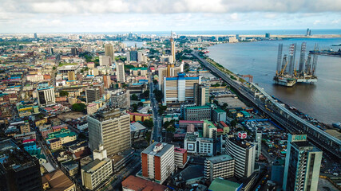

<!DOCTYPE html>
<html lang="en">

<head>
    <meta charset="UTF-8">
    <meta name="viewport" content="width=device-width, initial-scale=1.0">
    <title>Nsikak Eyo|WDD130</title>
    <meta name="description"
        content="This is my home page for WDD 130 course, where I will be learning about web development and creating a website.">
    <meta name="author" content="Nsikak Eyo">
    <link rel="stylesheet" href="styles/styles.css">

</head>

<body>
    </main>
    <aside>
        <h1>Nsikak Eyo |WDD130</h1>
        

        
        <p> Hello! My Name is Nsikak Eyo. Am from Uyo, a City in Nigeria. Uyo is the capital city of Akwa
            Ibom State in Nigeria, West Africa. It is known for its Beautiful landscapes,
            friendly people, and vibrant culture.
            Uyo is one of the fastest-growing cities in Nigeria.
            The city is home to the Godswills Akpabio International Stadium.
            Uyo has a rich cultural heritage and delicious local cuisine.
            It is known for its clean environment and well-planned road networks</p>

    </aside>
    <footer>

        <header>
            <nav>
                <a href="#">Home</a>
                <a href="WWr/">Rafting Site</a>
            </nav>
        </header>

        <footer>
            <p>©2025. 🎄 Nsikak Eyo, Uyo, Akwa Ibom, 🎄 Nigeria, West Africa</p>
        </footer>
</body>

</html>